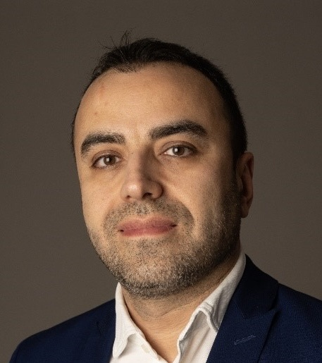
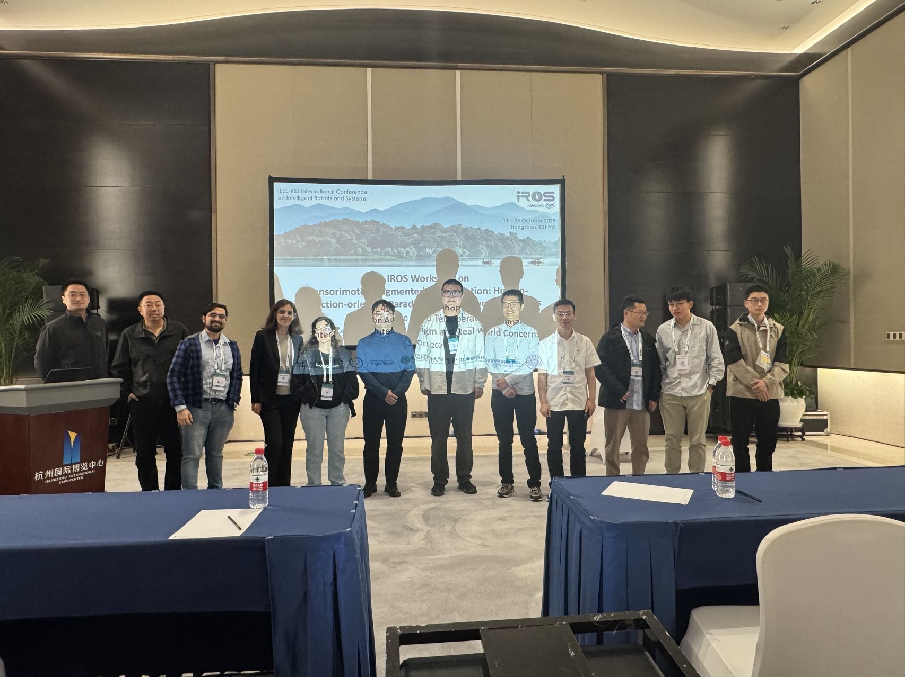
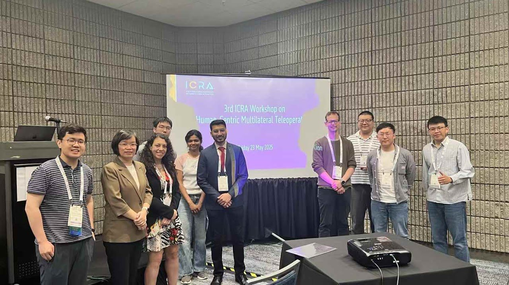
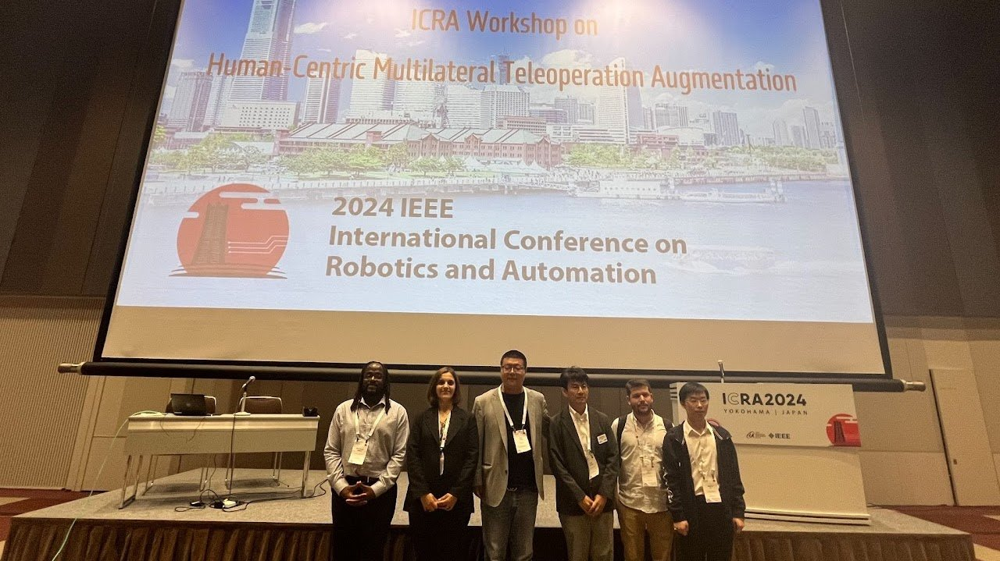
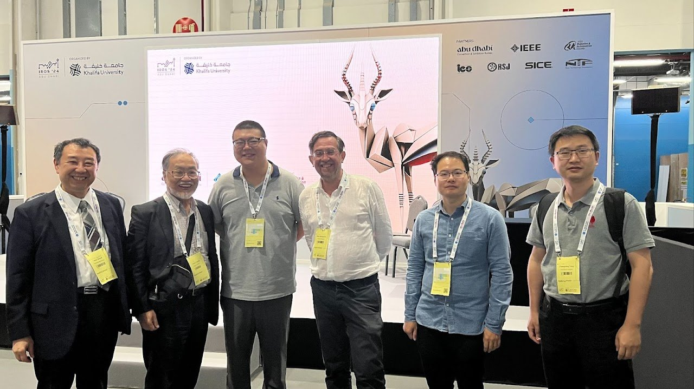
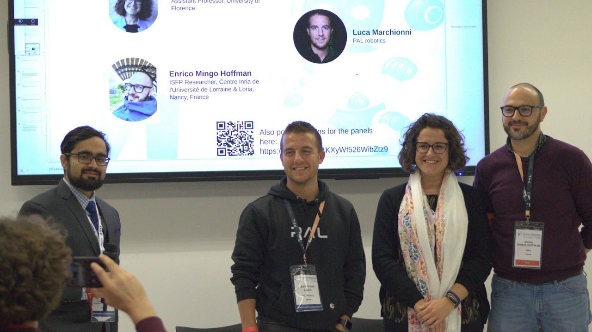

ICRA 2027 · Full-day workshop
6th Sensorimotor-Augmented Interaction
Human Interaction Oriented Robotics for Real World Deployment
- Location
- Seoul, Republic of Korea
Coex Convention & Exhibition Center - Date
- May 24 or 28, 2027
Workshop day and room to be confirmed
Proposal stage. The workshop is subject to conference acceptance.
About the workshop
This workshop examines how sensing, feedback and robot assistance work together in teleoperation, assistive robotics and physical human–robot interaction. It follows the human-interaction-oriented approach of the series, assessing assistance through its effect on both the task and the person using the robot.
The sixth edition focuses on how to evaluate assistance that improves task performance but may be difficult for users to understand or control. Topics include unreliable sensing and situations in which the robot’s estimate conflicts with the operator’s intention. Digital twins will be considered alongside physical experiments and user studies.
Invited talks and contributed work will inform a group discussion of an illustrative teleoperation task, followed by a short summary of evaluation considerations and questions for further study.
Invited speakers
The following speakers have confirmed their participation. Talk titles and abstracts will be announced.
Tentative programme
All times are local to Seoul (KST, UTC+9). The invited-speaker order is provisional.
Each 25-minute invited-talk slot includes a 20-minute presentation and up to five minutes for questions and transition.
| Time (KST) | Session |
|---|---|
| 08:30–08:35 | Opening remarksOrganizing team |
| 08:35–09:00 | Arash AjoudaniInvited talk |
| 09:00–09:25 | Monroe Kennedy IIIInvited talk |
| 09:25–09:50 | Marta LagomarsinoInvited talk |
| 09:50–10:20 | Contributed spotlightsUp to twelve presentations; questions during the poster sessions |
| 10:20–10:50 | Coffee, posters and demos |
| 10:50–11:15 | Sonia ChernovaInvited talk |
| 11:15–11:40 | Dongjun LeeInvited talk |
| 11:40–12:05 | Wansoo KimInvited talk |
| 12:05–12:30 | Chenguang YangInvited talk |
| 12:30–13:30 | Lunch breakGeneral break |
| Time (KST) | Session |
|---|---|
| 13:30–15:00 | Group discussionIntroduction, discussion in groups and preparation of brief reports |
| 15:00–15:30 | Coffee, posters and demos |
| 15:30–16:05 | Group reportsFour five-minute reports followed by open discussion |
| 16:05–16:50 | Plenary discussion and summaryEvaluation considerations and questions for further study |
| 16:50–17:20 | Panel discussionResearch directions and applications; panel membership to be announced |
| 17:20–17:30 | Closing remarksOrganizing team |
Group discussion
The afternoon discussion will use a teleoperation example in which sensing becomes unreliable or a digital twin’s prediction differs from observed contact. Organizers will prepare a short illustrated description and a one-page discussion sheet.
Participants will work in groups of five to eight to compare evaluation approaches. No specialised equipment or programming experience is required. Groups will consider task success and contact forces alongside user understanding, workload and perceived control. Participants may ask questions aloud or in writing.
The reporting session will include four five-minute reports followed by open discussion. Notes from every group will inform the plenary summary, identifying useful evaluation criteria and questions for further study. The closing panel will address broader research directions and applications.
Call for contributions
Call not yet open. Submission dates and instructions will be announced after workshop acceptance.
We welcome nonarchival submissions, including work in progress and application reports, on the workshop topics.
- Papers
- 2–4 pages
- Demo proposals
- 1 page
Two reviewers will assess each submission for relevance and technical clarity, with conflicts of interest avoided. Spotlight selections will represent a range of topics; questions will be taken during the poster sessions.
For contribution enquiries, contact Ziwei Wang.
Organizing committee
Ziwei WangPrimary contact
Lancaster University, UK
z.wang82@lancaster.ac.ukZhenyu Lu
South China University of Technology, China
luzhenyu@scut.edu.cnLuka Peternel
Delft University of Technology, Netherlands
L.Peternel@tudelft.nlAmy Kyungwon Han
Seoul National University, Republic of Korea
amyhan@snu.ac.krParag Khanna
KTH Royal Institute of Technology, Sweden
paragk@kth.seYiyang He
Lancaster University, UK
y.he20@lancaster.ac.ukAngela Faragasso
Temple University Japan Campus, Japan
angela.faragasso@tuj.temple.eduEiichi Yoshida
Tokyo University of Science, Japan
eiichi.yoshida@rs.tus.ac.jpJee-Hwan Ryu
KAIST, Republic of Korea
jhryu@kaist.ac.krChangyun Wen
Nanyang Technological University, Singapore
ecywen@ntu.edu.sgPrevious workshops
Recent editions have typically attracted about 80–100 participants, based on organizer estimates.
Workshop photographs
From previous ICRA, IROS and related Humanoids workshops. Select a photograph to view the full image.

IROS 2025
Hangzhou, China4th Sensorimotor-Augmented Teleoperation
Workshop website
ICRA 2025
Atlanta, USA3rd Human-Centric Multilateral Teleoperation Workshop
Workshop website
ICRA 2024
Yokohama, JapanHuman-Centric Multilateral Teleoperation Augmentation
Workshop website
IROS 2024
Abu Dhabi, UAEMultisensory Transparency-Augmented Teleoperation in Extreme Environments
Workshop website
Humanoids 2024 & 2025
Related workshop seriesReal World Physical and Social Human-Robot Interaction
Workshop websiteContact
Programme, contributions and participation
Dr Ziwei Wang
Lancaster University, UK
z.wang82@lancaster.ac.uk